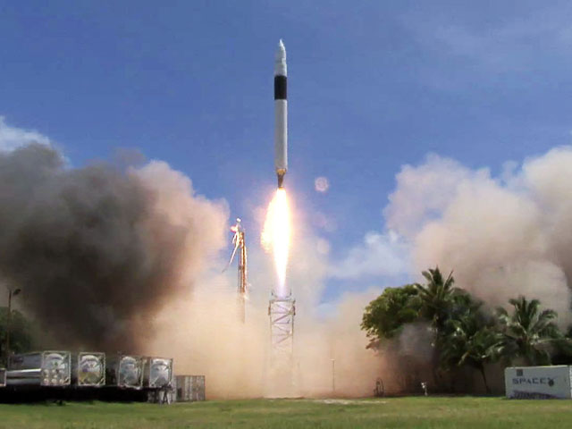

일론 머스크
발사체
지구 궤도상 우주선
행성간 우주선
엔진
발사체(글씨를 자세히 보려면 클릭을 누르고 있으시오)
소형발사체 팰컨 1: 팰컨시리즈의 가장 초기의 모델로 1단에 멀린-1C엔진을 사용하며 2단에는 케스트렐 엔진을 사용한 로켓으로 670kg 내외의 소형탑재물을 지구 저궤도에, 태양동기궤도에 430kg을 올릴 수 있다. 총 5번의 발사 중 3번을 내리 실패하고 2번을 성공했다. 발사 시험에서는 180kg의 탑재체를 탑재하였다. 총 추력은 1단 75톤, 2단 3.1톤급으로 78.1톤이다. 세계 최초의 민간 개발 우주로켓이다.
대형발사체 팰컨 9: 2015년 6월 28일 오후 11시(KMT), CRS-7의 발사 도중(점화 후 2분 32초) 폭발하는 사고가 있었다. 2015년 12월 21일, 사고 이후 기존의 v1.1에서 v1.1 Full Thrust(완전 추진기)로 대폭 개량한 20번째 발사체가 역사상 최초로 화물을 궤도에 올리고 임무를 마친 뒤 지상에 착륙하여 로켓을 그대로 회수하는 기록을 세웠다.
이후 2017년부터는 특별한 사고나 문제 발생 없이, 매달 최소 1~2회씩 미친듯한 속도로 계속 로켓을 쏘아올리고 있다. 
대형발사체 팰컨 헤비: 펠컨 헤비는 스페이스X의 현존하는 로켓 중 가장 강력한 로켓으로, 팰컨 9의 양 옆에 기존의 1단과 거의 동일한 부스터를 덧붙인 형태이다. 1단에 엔진이 27개 장착되어 있으며 이를 통해 기존의 가장 강력했던 로켓인 ULA의 델타 4 헤비보다 큰 추력을 낼 수 있다. 단, 재활용 버전에서는 페이로드가 델타 4 헤비에 밀린다.
발사장과 랜딩 패드는 반덴버그 공군기지와 케네디 우주센터(공군기지가 아닌 NASA 발사장)로 예정되어 있는데, 케네디 우주센터의 LC-39A 발사장을 이용하기로 예정되어 있다.
우주 궤도상 우주선(글씨를 자세히 보려면 클릭을 누르고 있으시오)
지구궤도 드래곤1: NASA에서 주관하는 민간 궤도수송 프로그램(COTS)을 담당하는 화물 우주선으로 2012년 5월 22일에 국제우주정거장에 도킹한 최초의 민간 자본 우주선으로서 발사되었다. 한국 시각으로 2020년 3월 7일 오후 1시경 발사된 CRS-20 미션을 끝으로 드래곤 1은 퇴역할 예정이고, 2020년부터 시작되는 COTS 2기 사업에는 드래곤 2 화물선이 사용될 예정이다.
지구궤도 드래곤2: 미국의 민간 우주기업 스페이스X에서 운항 중인 유인우주선이다. 상업 승무원 수송 프로그램의 일환으로 개발되었으며 2020년 인류 역사상 최초로 지구궤도에 진출한 민간 유인우주선이다. 낙하산을 이용해 수상에 착륙하는 전통적인 미국식 캡슐, 낙하산을 이용하지만 지면에 충돌 직전에 역추진 로켓으로 최종적으로 감속하는 러시아식 캡슐과 달리 낙하산 없는 SuperDraco 엔진을 통한 역분사 착륙 기술을 사용하려고 하였다.
행성간 우주선(글씨를 자세히 보려면 클릭을 누르고 있으시오)
달궤도 드래곤XL: 미국의 민간 우주기업 스페이스X에서 개발이 발표된 달 궤도 보급선이다. 아르테미스 계획의 일환으로 개발되었으며, 나사로부터 루나 게이트웨이의 재보급선으로 2020년 3월 27일에 계약되었다.드래곤 XL의 형상은 전작인 드래곤이나 크루 드래곤의 캡슐 방식이 아니라, 시그너스나 HTV와 같은 원통형이기 때문에 일각에서는 재사용 불가 모델로 개발될 것이라는 예측이 나오고 있다.
타행성 스타쉽: 스페이스X에서 개발중인 다목적 초대형 우주발사체. 단기적으로는 팰컨 9과 팰컨헤비를 대체하며 달과 화성 탐사, 그리고 장차 먼 미래의 행성간 탐사 계획까지 고려해 설계된 기체다. 우주선(2단부)인 "스타십(Starship)"과 부스터(1단부)인 "슈퍼헤비(Super heavy)"로 구성된다. 전장 120m, 직경 9m로 전장 110.6m였던 새턴 V 로켓을 제치고 역사상 최대, 최고 성능의 로켓이 될 예정이다.
엔진(글씨를 자세히 보려면 클릭을 누르고 있으시오)
팰컨시리즈 멀린: 멀린 엔진(Merlin Engine)은 스페이스X사가 개발한 로켓 엔진이다. RP-1을 사용하며, 추력 30톤에서 80톤까지 점차 대형화되고 있다. 팰컨 9는 멀린 엔진을 9개 써서 팰컨 9이라고 부른다.
팰컨,드래곤 엔진 드라코: 드래곤 1과 드래곤 2에 사용중인 엔진이다. 추력은 400N이며 진공상태이다.
스타십 엔진 랩터: 미국의 스페이스X에서 2009년부터 개발 중인 재활용이 가능한 액체 로켓 엔진이다. 케로신이나 액체수소를 연료로 이용하는 다른 로켓 엔진들과 달리 액체 메테인을 사용한다. 산화제로는 액체 산소를 사용한다. 추력은 2500kN이다. 랩터 엔진을 28개로 클러스터링해 슈퍼 헤비에 사용되고, 3개의 해면 랩터 엔진과 3개의 진공 랩터 엔진을 묶어 스타십에 사용될예정이다.
드래곤 엔진 슈퍼 드라코: 드래곤 2 에 사용 중인 엔진으로, 개발 초기에는 역추진 착륙용으로 개발되었으나 역추진 착륙을 포기한 후로는 비상 탈출 전용으로만 쓰이고 있다.